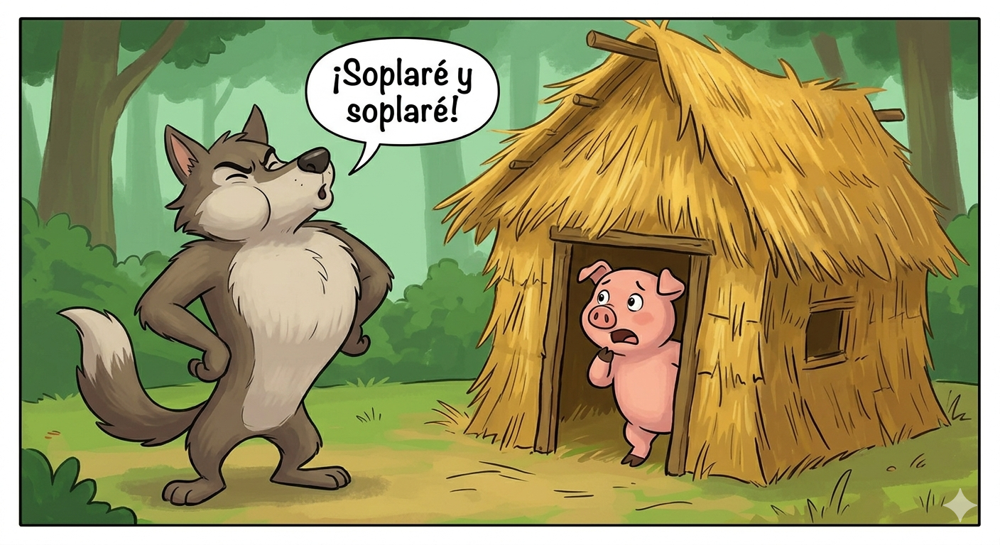
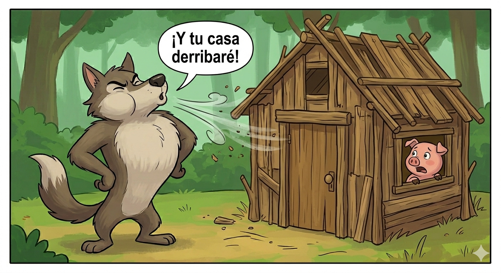
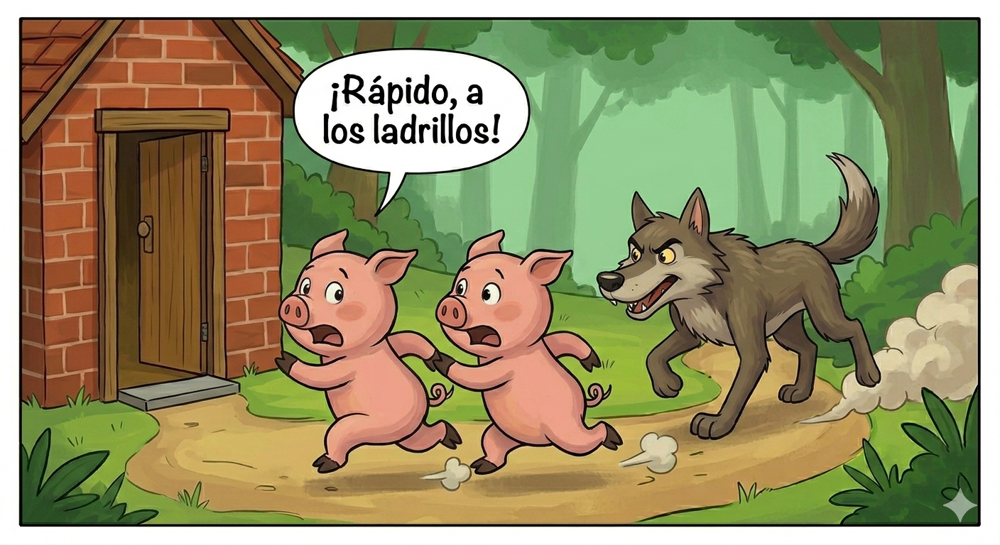
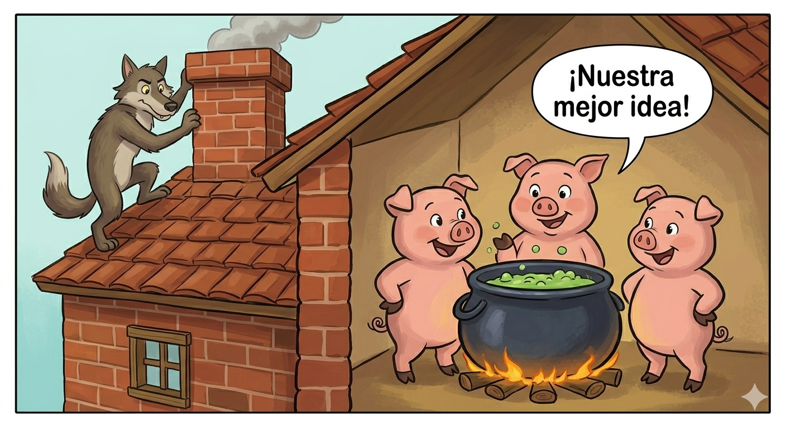

<!DOCTYPE html>
<html lang="es"></html>

<head>
    <meta charset="UTF-8">
    <meta name="viewport" content="width=device-width, initial-scale=1.0">
    <title>Los tres cerditos</title>
</head>

<body>

    <header>
        <h1> Los Tres Cerditos</h1>

        <h2> Cuento popular de origen británico</h2>

        <h3> Recopilado por James Orchard Halliwell-Phillipps</h3>

        <h4> Versión basada en la versión clásica de Joseph Jacobs y en la adaptación de Walt Disney</h2>
    </header>
    <hr>

    <main>
        <article>
            <p>
                Había una vez tres hermanos cerditos que vivían en el corazón del bosque. Como el temible lobo feroz siempre los estaba persiguiendo para comérselos, el hermano mayor propuso que cada uno construyera su propia casa para protegerse. A los otros dos les pareció una idea excelente, así que se pusieron manos a la obra de inmediato.
            </p>

            <p>
                El cerdito menor, que era el más perezoso del grupo, decidió hacer su casa de paja para terminar rápido. En apenas unas horas entrelazó los tallos secos, techó la cabaña y se sentó a descansar, feliz de tener tiempo libre para jugar y cantar el resto del día.
            </p>
            <p>
                El cerdito mediano, un poco más trabajador pero también bastante impaciente, eligió construir su casa utilizando tablones de madera. Aunque le costó algo más de esfuerzo clavar los maderos y asegurar las paredes, terminó en un par de días y corrió a reunirse con su hermano menor para holgazanear.
            </p>
            <p>
                El hermano mayor, que era el más sensato y paciente de los tres, sabía perfectamente que solo una estructura sólida los mantendría a salvo. Por eso, decidió construir su casa con ladrillos y cemento; a pesar del enorme esfuerzo y de los días que le tomó levantarla, valió la pena ver su hogar fuerte y seguro.
            </p>
            <p>
                <div>
                    No pasó mucho tiempo antes de que el lobo feroz apareciera en el bosque en busca de comida. Olfateando el aire, se acercó primero a la casa de paja del cerdito menor y, con voz cavernosa, gritó desde afuera: «¡Cerdito, cerdito, déjame entrar!». El pequeño se negó temblando, a lo que el lobo respondió:
                </div>
                <div>
                    «¡Pues soplaré y soplaré, y la casa derribaré!».
                </div>
            
            <p>
                El lobo llenó sus pulmones de aire y sopló con todas sus fuerzas. La ligera estructura de paja salió volando por los aires en un segundo, dejando al cerdito completamente indefenso. Aterrado, el pequeño corrió a toda velocidad por el bosque hacia la casa de madera de su hermano mediano.
            </p>
            <p>
                El lobo, hambriento y enfurecido, no tardó en llegar a la casa de madera donde se escondían ambos hermanos. Tocó la puerta con fuerza y volvió a amenazarlos con la misma advertencia; ante la negativa de los cerditos, inspiró profundamente y sopló con el doble de potencia, haciendo que las maderas crujieran y salieran despedidas.
            </p>
            
            <p>
                Los dos cerditos corrieron desesperados, con el lobo casi pisándoles los talones, hasta que lograron entrar en la robusta casa de ladrillos de su hermano mayor. Este los recibió con calma, cerró la pesada puerta de madera con cerrojo y los tranquilizó, asegurándoles que allí dentro el lobo jamás podría alcanzarlos.
            </p>
            <
            <p>
                Poco después, el lobo llegó jadeando y, al ver la sólida construcción, sopló y sopló una y otra vez hasta quedarse casi sin aliento. Al darse cuenta de que las paredes de ladrillo ni siquiera se movían, el astuto animal buscó otra entrada y descubrió la chimenea en el tejado, decidiendo deslizarse por ella para sorprenderlos.
            </p>
            <p>
                Sin embargo, el cerdito mayor ya había previsto el peligro y colocó una gran olla de agua hirviendo justo debajo de la chimenea. Al caer, el lobo se quemó la cola tan fuerte que dio un tremendo aullido, salió disparado hacia el tejado y huyó del bosque para no volver jamás, dejando a los tres hermanos viviendo felices y seguros.
            </p>
            
        </article>
    </main>

    <hr>

    <footer>
        Mis redes sociales: Facebook - X - Instagram
    </footer>
</body>